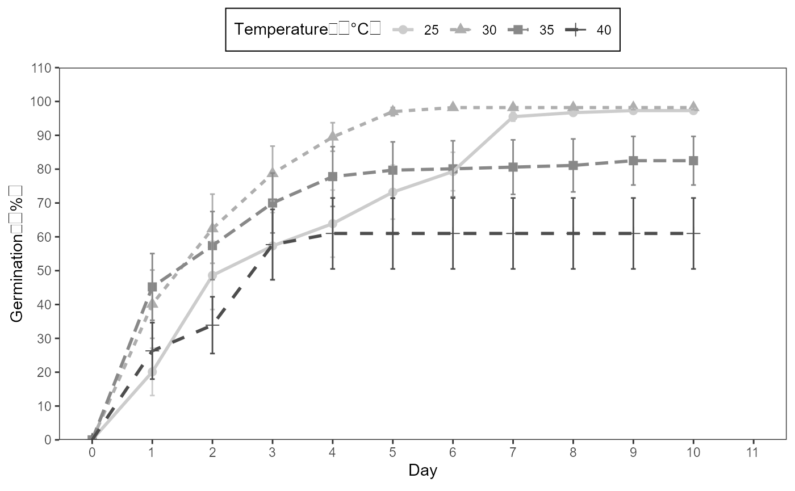

Analysis for the germination experiment can follow a routine. The functions will de explain according to the data set included in the GerminaR package (“prosopis”).
# Install packages and dependencies library(GerminaR) library(dplyr) # load data fb <- prosopis %>% dplyr::mutate(across(c(nacl, temp, rep), as.factor)) # Prosopis data set fb %>% head(10) %>% kable(caption = "Prosopis dataset loaded")
| rep | nacl | temp | seeds | D0 | D1 | D2 | D3 | D4 | D5 | D6 | D7 | D8 | D9 | D10 |
|---|---|---|---|---|---|---|---|---|---|---|---|---|---|---|
| 1 | 0 | 25 | 50 | 0 | 39 | 8 | 3 | 0 | 0 | 0 | 0 | 0 | 0 | 0 |
| 2 | 0 | 25 | 50 | 0 | 40 | 9 | 1 | 0 | 0 | 0 | 0 | 0 | 0 | 0 |
| 3 | 0 | 25 | 50 | 0 | 34 | 16 | 0 | 0 | 0 | 0 | 0 | 0 | 0 | 0 |
| 4 | 0 | 25 | 50 | 0 | 43 | 7 | 0 | 0 | 0 | 0 | 0 | 0 | 0 | 0 |
| 1 | 0 | 30 | 50 | 0 | 48 | 2 | 0 | 0 | 0 | 0 | 0 | 0 | 0 | 0 |
| 2 | 0 | 30 | 50 | 0 | 47 | 3 | 0 | 0 | 0 | 0 | 0 | 0 | 0 | 0 |
| 3 | 0 | 30 | 50 | 0 | 50 | 0 | 0 | 0 | 0 | 0 | 0 | 0 | 0 | 0 |
| 4 | 0 | 30 | 50 | 0 | 49 | 1 | 0 | 0 | 0 | 0 | 0 | 0 | 0 | 0 |
| 1 | 0.5 | 25 | 50 | 0 | 10 | 37 | 1 | 2 | 0 | 0 | 0 | 0 | 0 | 0 |
| 2 | 0.5 | 25 | 50 | 0 | 18 | 30 | 1 | 1 | 0 | 0 | 0 | 0 | 0 | 0 |
# germination analysis (ten variables) gsm <- ger_summary(SeedN = "seeds" , evalName = "D" , data = fb ) # Prosopis data set processed gsm %>% head(10) %>% kable(caption = "Function ger_summary performe ten germination indices")
| rep | nacl | temp | seeds | grs | grp | mgt | mgr | gsp | unc | syn | vgt | sdg | cvg |
|---|---|---|---|---|---|---|---|---|---|---|---|---|---|
| 1 | 0 | 25 | 50 | 50 | 100 | 1.28 | 0.7812500 | 78.12500 | 0.9461447 | 0.6302041 | 0.3281633 | 0.5728554 | 44.75433 |
| 2 | 0 | 25 | 50 | 50 | 100 | 1.22 | 0.8196721 | 81.96721 | 0.8157272 | 0.6661224 | 0.2159184 | 0.4646702 | 38.08772 |
| 3 | 0 | 25 | 50 | 50 | 100 | 1.32 | 0.7575758 | 75.75758 | 0.9043815 | 0.5559184 | 0.2220408 | 0.4712121 | 35.69788 |
| 4 | 0 | 25 | 50 | 50 | 100 | 1.14 | 0.8771930 | 87.71930 | 0.5842388 | 0.7542857 | 0.1228571 | 0.3505098 | 30.74648 |
| 1 | 0 | 30 | 50 | 50 | 100 | 1.04 | 0.9615385 | 96.15385 | 0.2422922 | 0.9216327 | 0.0391837 | 0.1979487 | 19.03353 |
| 2 | 0 | 30 | 50 | 50 | 100 | 1.06 | 0.9433962 | 94.33962 | 0.3274449 | 0.8848980 | 0.0575510 | 0.2398979 | 22.63188 |
| 3 | 0 | 30 | 50 | 50 | 100 | 1.00 | 1.0000000 | 100.00000 | 0.0000000 | 1.0000000 | 0.0000000 | 0.0000000 | 0.00000 |
| 4 | 0 | 30 | 50 | 50 | 100 | 1.02 | 0.9803922 | 98.03922 | 0.1414405 | 0.9600000 | 0.0200000 | 0.1414214 | 13.86484 |
| 1 | 0.5 | 25 | 50 | 50 | 100 | 1.90 | 0.5263158 | 52.63158 | 1.0844751 | 0.5812245 | 0.3775510 | 0.6144518 | 32.33957 |
| 2 | 0.5 | 25 | 50 | 50 | 100 | 1.70 | 0.5882353 | 58.82353 | 1.1985488 | 0.4800000 | 0.3775510 | 0.6144518 | 36.14422 |
## Germination Percentage (GRP) # analysis of variance av <- aov(formula = grp ~ nacl*temp + rep, data = gsm) # mean comparison test mc_grp <- ger_testcomp(aov = av , comp = c("temp", "nacl") , type = "snk" ) # data result mc_grp$table %>% kable(caption = "Germination percentage mean comparision")
| temp | nacl | grp | std | r | ste | min | max | sig |
|---|---|---|---|---|---|---|---|---|
| 25 | 0 | 100.0 | 0.000000 | 4 | 0.0000000 | 100 | 100 | a |
| 25 | 0.5 | 100.0 | 0.000000 | 4 | 0.0000000 | 100 | 100 | a |
| 25 | 1 | 96.0 | 1.632993 | 4 | 0.8164966 | 94 | 98 | abc |
| 25 | 1.5 | 96.0 | 1.632993 | 4 | 0.8164966 | 94 | 98 | abc |
| 25 | 2 | 94.5 | 2.516611 | 4 | 1.2583057 | 92 | 98 | bc |
| 30 | 0 | 100.0 | 0.000000 | 4 | 0.0000000 | 100 | 100 | a |
| 30 | 0.5 | 100.0 | 0.000000 | 4 | 0.0000000 | 100 | 100 | a |
| 30 | 1 | 98.5 | 1.914854 | 4 | 0.9574271 | 96 | 100 | a |
| 30 | 1.5 | 98.5 | 3.000000 | 4 | 1.5000000 | 94 | 100 | a |
| 30 | 2 | 94.0 | 1.632993 | 4 | 0.8164966 | 92 | 96 | c |
| 35 | 0 | 100.0 | 0.000000 | 4 | 0.0000000 | 100 | 100 | a |
| 35 | 0.5 | 98.0 | 2.309401 | 4 | 1.1547005 | 96 | 100 | ab |
| 35 | 1 | 96.0 | 2.828427 | 4 | 1.4142136 | 92 | 98 | abc |
| 35 | 1.5 | 98.5 | 1.914854 | 4 | 0.9574271 | 96 | 100 | a |
| 35 | 2 | 20.0 | 1.632993 | 4 | 0.8164966 | 18 | 22 | d |
| 40 | 0 | 100.0 | 0.000000 | 4 | 0.0000000 | 100 | 100 | a |
| 40 | 0.5 | 96.0 | 1.632993 | 4 | 0.8164966 | 94 | 98 | abc |
| 40 | 1 | 98.5 | 1.914854 | 4 | 0.9574271 | 96 | 100 | a |
| 40 | 1.5 | 10.5 | 1.914854 | 4 | 0.9574271 | 8 | 12 | e |
| 40 | 2 | 0.0 | 0.000000 | 4 | 0.0000000 | 0 | 0 | f |
# bar graphics for germination percentage grp <- mc_grp$table %>% fplot(data = . , type = "bar" , x = "temp" , y = "grp" , groups = "nacl" , limits = c(0,150) , brakes = 30 , ylab = "Germination ('%')" , xlab = "Temperature (ºC)" , glab = "NaCl (MPa)" , legend = "top" , error = "ste" , sig = "sig" , color = F ) grp
Germination experiment with Prosopis juliflor under different osmotic potentials and temperatures. Bar graph with germination percentage in a factorial analisys
## Mean Germination Time (MGT) # analysis of variance av <- aov(formula = mgt ~ nacl*temp + rep, data = gsm) # mean comparison test mc_mgt <- ger_testcomp(aov = av , comp = c("temp", "nacl") , type = "snk") # data result mc_mgt$table %>% kable(caption = "Mean germination time comparison")
| temp | nacl | mgt | std | r | ste | min | max | sig |
|---|---|---|---|---|---|---|---|---|
| 25 | 0 | 1.240000 | 0.0783156 | 4 | 0.0391578 | 1.140000 | 1.320000 | j |
| 25 | 0.5 | 1.830000 | 0.0901850 | 4 | 0.0450925 | 1.700000 | 1.900000 | i |
| 25 | 1 | 2.701218 | 0.1512339 | 4 | 0.0756169 | 2.531915 | 2.897959 | g |
| 25 | 1.5 | 5.442365 | 0.0415525 | 4 | 0.0207763 | 5.382979 | 5.479167 | c |
| 25 | 2 | 6.523349 | 0.3068542 | 4 | 0.1534271 | 6.063830 | 6.695652 | b |
| 30 | 0 | 1.030000 | 0.0258199 | 4 | 0.0129099 | 1.000000 | 1.060000 | j |
| 30 | 0.5 | 1.100000 | 0.0432049 | 4 | 0.0216025 | 1.060000 | 1.160000 | j |
| 30 | 1 | 1.898129 | 0.0609184 | 4 | 0.0304592 | 1.833333 | 1.959184 | i |
| 30 | 1.5 | 2.994362 | 0.1138473 | 4 | 0.0569236 | 2.900000 | 3.160000 | f |
| 30 | 2 | 4.388259 | 0.0676715 | 4 | 0.0338357 | 4.326087 | 4.446809 | d |
| 35 | 0 | 1.015000 | 0.0191485 | 4 | 0.0095743 | 1.000000 | 1.040000 | j |
| 35 | 0.5 | 1.076250 | 0.0291905 | 4 | 0.0145952 | 1.060000 | 1.120000 | j |
| 35 | 1 | 1.817607 | 0.2398098 | 4 | 0.1199049 | 1.653061 | 2.173913 | i |
| 35 | 1.5 | 3.370480 | 0.0159689 | 4 | 0.0079844 | 3.354167 | 3.387755 | e |
| 35 | 2 | 6.984343 | 0.3784214 | 4 | 0.1892107 | 6.555556 | 7.400000 | a |
| 40 | 0 | 1.035000 | 0.0191485 | 4 | 0.0095743 | 1.020000 | 1.060000 | j |
| 40 | 0.5 | 2.327648 | 0.0512449 | 4 | 0.0256225 | 2.255319 | 2.375000 | h |
| 40 | 1 | 2.728780 | 0.1714562 | 4 | 0.0857281 | 2.520833 | 2.940000 | g |
| 40 | 1.5 | 3.287500 | 0.1012651 | 4 | 0.0506326 | 3.166667 | 3.400000 | e |
# bar graphics for mean germination time mgt <- mc_mgt$table %>% fplot(data = . , type = "bar" , x = "temp" , y = "mgt" , groups = "nacl" , limits = c(0,9) , brakes = 1 , ylab = "Mean germination time (days)" , xlab = "Temperature (ºC)" , glab = "NaCl (MPa)" , legend = "top" , sig = "sig" , error = "ste" , color = T ) mgt
Germination experiment with Prosopis juliflor under different osmotic potentials and temperatures. Bar graph for mean germination time in a factorial analisys.
You can add at each plot different arguments as the standard error, significance of the mean test, color, labels and limits. The resulted graphics are performed for publications and allows to insert math expression in the titles.
The cumulative analysis of the germination allows to observe the evolution of the germination process, being able to be expressed as the percentage of germination or with the relative germination.
# data frame with percentage or relative germination in time by NaCl git <- ger_intime(Factor = "nacl" , SeedN = "seeds" , evalName = "D" , method = "percentage" , data = fb ) # data result git %>% head(10) %>% kable(caption = "Cumulative germination by nacl factor")
| nacl | evaluation | mean | r | std | min | max | ste |
|---|---|---|---|---|---|---|---|
| 0 | 0 | 0.000 | 16 | 0.0000000 | 0 | 0 | 0.0000000 |
| 0.5 | 0 | 0.000 | 16 | 0.0000000 | 0 | 0 | 0.0000000 |
| 1 | 0 | 0.000 | 16 | 0.0000000 | 0 | 0 | 0.0000000 |
| 1.5 | 0 | 0.000 | 16 | 0.0000000 | 0 | 0 | 0.0000000 |
| 2 | 0 | 0.000 | 16 | 0.0000000 | 0 | 0 | 0.0000000 |
| 0 | 1 | 92.500 | 16 | 9.4516313 | 68 | 100 | 2.3629078 |
| 0.5 | 1 | 57.250 | 16 | 35.5818306 | 12 | 96 | 8.8954576 |
| 1 | 1 | 14.500 | 16 | 12.9099445 | 0 | 40 | 3.2274861 |
| 1.5 | 1 | 0.375 | 16 | 0.8062258 | 0 | 2 | 0.2015564 |
| 2 | 1 | 0.000 | 16 | 0.0000000 | 0 | 0 | 0.0000000 |
# graphic germination in time by NaCl nacl <- git %>% fplot(data = . , type = "line" , x = "evaluation" , y = "mean" , groups = "nacl" , limits = c(0, 110) , brakes = 10 , ylab = "Germination ('%')" , xlab = "Day" , glab = "NaCl (MPa)" , legend = "top" , color = T , error = "ste" ) nacl
Germination experiment with Prosopis juliflor under different osmotic potentials and temperatures. Line graph from cumulative germination under different osmotic potentials.
# data frame with percentage or relative germination in time by temperature git <- ger_intime(Factor = "temp" , SeedN = "seeds" , evalName = "D" , method = "percentage" , data = fb) # data result git %>% head(10) %>% kable(caption = "Cumulative germination by temperature factor")
| temp | evaluation | mean | r | std | min | max | ste |
|---|---|---|---|---|---|---|---|
| 25 | 0 | 0.0 | 20 | 0.00000 | 0 | 0 | 0.000000 |
| 30 | 0 | 0.0 | 20 | 0.00000 | 0 | 0 | 0.000000 |
| 35 | 0 | 0.0 | 20 | 0.00000 | 0 | 0 | 0.000000 |
| 40 | 0 | 0.0 | 20 | 0.00000 | 0 | 0 | 0.000000 |
| 25 | 1 | 20.1 | 20 | 31.25094 | 0 | 86 | 6.987922 |
| 30 | 1 | 40.1 | 20 | 45.10327 | 0 | 100 | 10.085399 |
| 35 | 1 | 45.2 | 20 | 44.09750 | 0 | 100 | 9.860501 |
| 40 | 1 | 26.3 | 20 | 37.31671 | 0 | 98 | 8.344270 |
| 25 | 2 | 48.6 | 20 | 45.07818 | 0 | 100 | 10.079787 |
| 30 | 2 | 62.4 | 20 | 45.70662 | 0 | 100 | 10.220310 |
# graphic germination in time by temperature temp <- git %>% fplot(data = . , type = "line" , x = "evaluation" , y = "mean" , groups = "temp" , limits = c(0, 110) , brakes = 10 , ylab = "Germination ('%')" , xlab = "Day" , glab = "Temperature ('°C')" , legend = "top" , color = F ) temp
Germination experiment with Prosopis juliflor under different osmotic potentials and temperatures. Line graph from cumulative germination under different temperatures.
As the function fplot() is build using ggplot2 (Wickham et al., 2020). You can add more arguments for modify the graphics using +.
library(ggplot2) git <- ger_intime(Factor = "temp" , SeedN = "seeds" , evalName = "D" , method = "percentage" , data = fb ) ggplot <- git %>% fplot(data = . , type = "line" , x = "evaluation" , y = "mean" , groups = "temp" , limits = c(0, 110) , brakes = 10 , ylab = "Germination ('%')" , xlab = "Day" , glab = "Temperature ('°C')" , legend = "top" , color = F ) + scale_x_continuous(n.breaks = 10 , limits = c(0, 11) ) ggplot

Wickham, H., Chang, W., Henry, L., Pedersen, T. L., Takahashi, K., Wilke, C., Woo, K., Yutani, H., & Dunnington, D. (2020). Ggplot2: Create elegant data visualisations using the grammar of graphics. https://CRAN.R-project.org/package=ggplot2